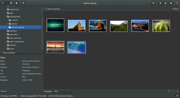
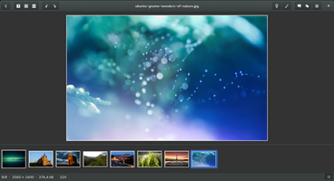

gThumb
Dieser Artikel wurde für die folgenden Ubuntu-Versionen getestet:
Ubuntu 16.04 Xenial Xerus
Ubuntu 14.04 Trusty Tahr
Zum Verständnis dieses Artikels sind folgende Seiten hilfreich:
gThumb  ist ein Open-Source-Bildbetrachter für die Desktop-Umgebung GNOME. gThumb besitzt eine einfache, klar gegliederte Oberfläche, unter der man Bilddateien ansehen, organisieren und verändern kann. Darüber hinaus bietet das Programm zahlreiche Funktionen, die im Umgang mit Bildern hilfreich sein können.
ist ein Open-Source-Bildbetrachter für die Desktop-Umgebung GNOME. gThumb besitzt eine einfache, klar gegliederte Oberfläche, unter der man Bilddateien ansehen, organisieren und verändern kann. Darüber hinaus bietet das Programm zahlreiche Funktionen, die im Umgang mit Bildern hilfreich sein können.
Im Gegensatz zu vielen anderen Bildbetrachtern (GPicview, Mirage, Ristretto und Viewnior) ist auch eine Druckfunktion vorhanden.
Installation¶
Das folgende Paket muss installiert [1] werden:
gthumb (universe)
 mit apturl
mit apturl
Paketliste zum Kopieren:
sudo apt-get install gthumb
sudo aptitude install gthumb
Man erhält bei Ubuntu 14.04 die Version 3.3 und bei Ubuntu 16.04 die Version 3.4 (erst letztere unterstützt die Anzeige von RAW-Bildern).
PPA¶
Unter Umständen sind – je nach vorhandener Ubuntu-Version – aktuellere Versionen über ein "Personal Package Archiv" (PPA) erhältlich.
Adresszeile zum Hinzufügen des PPAs:
ppa:webupd8team/gthumb
Hinweis!
Zusätzliche Fremdquellen können das System gefährden.
Ein PPA unterstützt nicht zwangsläufig alle Ubuntu-Versionen. Weitere Informationen sind der  PPA-Beschreibung des Eigentümers/Teams webupd8team zu entnehmen.
PPA-Beschreibung des Eigentümers/Teams webupd8team zu entnehmen.
Damit Pakete aus dem PPA genutzt werden können, müssen die Paketquellen neu eingelesen werden.
Nach der Aktualisierung der Paketquellen erfolgt die Installation wie oben angegeben.
Hinweis:
Die mit Vorversionen abgespeicherten Kommentare zu den Bildern sind nicht exakt kompatibel, die Tastenkürzel für die Bedienung unterscheiden sich gleichfalls.
Verwendung¶
Anschließend kann das Programm bei Ubuntu-Varianten mit einem Anwendungsmenü über "Grafik -> gThumb" gestartet werden [2].
|  |
| gThumb 3.3 - Gesamtansicht |
|  |
| gThumb 3.3 - Bearbeitungsmodus |
Bildbetrachter¶
Einzelne Bilder in verschiedenen Bildformaten können betrachtet werden
Exif-Daten anzeigen
Vollbild- und Präsentationsmodus
Bildübersicht¶
Vorschaubilder (Thumbnails) für komplette Ordner
Vorschaubilder werden im selben Ordner gespeichert, den auch Dateimanager nutzen
Bilder kopieren, löschen, verschieben usw.
Lesezeichen-Funktionen (Bookmarks), um schnellen Zugriff auf Bilderordner zu haben
Bilder organisieren¶
Kommentare zu Bildern hinzufügen (siehe Metadaten)
Bilder zu Katalogen und Kataloge zu Bibliotheken zusammenfassen
Mehrere Bilder und Kommentare auf eine Seite drucken
Suchdurchläufe lassen sich als dynamische Kataloge abspeichern
Bilder bearbeiten¶
einzelne oder eine Auswahl von Bildern lässt sich bearbeiten
Helligkeit, Sättigung, Kontrast und Farben
Skalieren, Zuschneiden, Drehen
Weitere Funktionen¶
Import von Aufnahmen aus Digital-Kameras
Bilder direkt als Desktop-Hintergrund setzen
Indexbilder erzeugen
Ganze Bildserien umbenennen
Verlustfreie JPEG-Konvertierungen
Doppelte Bilder finden
Ganze Bildserien umbenennen¶
Um mehrere Bilder umzubenennen, diese markieren und F2 drücken. Bei Auswahl des Datums wird die lange Version (Datum und Uhrzeit) verwendet. Um hier ein anderes Format, z.B. 2011-06-17_001.jpg zu wählen, dies in geschlossenen Klammern angeben:
%D{%Y-%m-%d}_###%EProblembehebung¶
Löschen aus Suchergebnissen¶
Bei verschiedenen Versionen funktioniert dies nicht mit der
Entf -Taste, sondern nur über das Kontextmenü  .
.
RAW-Dateien¶
Hinweis:
Ab Ubuntu 16.04 ist die Anzeige von RAW-Dateien integriert.
gThumb kann auch mit RAW-Dateien umgehen. Dazu muss es allerdings mit der Bibliothek openraw kompiliert [3] werden. Dazu ist es notwendig, diese Pakete zu installieren:
libgnome2-dev
libgnomeui-dev
libboost-dev
libtiff4-dev
libiptcdata0-dev (um IPTC-Tags zu editieren )
libgphoto2-2-dev (um Bilder von der Kamera herunterzuladen )
xlibs-dev
dcraw
mit apturl
Paketliste zum Kopieren:
sudo apt-get install libgnome2-dev libgnomeui-dev libboost-dev libtiff4-dev libiptcdata0-dev libgphoto2-2-dev xlibs-dev dcraw
sudo aptitude install libgnome2-dev libgnomeui-dev libboost-dev libtiff4-dev libiptcdata0-dev libgphoto2-2-dev xlibs-dev dcraw
Danach kompiliert man zuerst openraw und anschließend gThumb.
Links¶
Projektseite
auf SourceForgegThumb 2.12.0 (Stable) Has Been Released
- Blogbeitrag 09/2010Mit gthumb ein Webalbum erstellen
 - Blogbeitrag 05/2009
- Blogbeitrag 05/2009Bilder verwalten
 Übersichtsartikel
Übersichtsartikel
- Erstellt mit Inyoka
-
 2004 – 2017 ubuntuusers.de • Einige Rechte vorbehalten
2004 – 2017 ubuntuusers.de • Einige Rechte vorbehalten
Lizenz • Kontakt • Datenschutz • Impressum • Serverstatus -
Serverhousing gespendet von